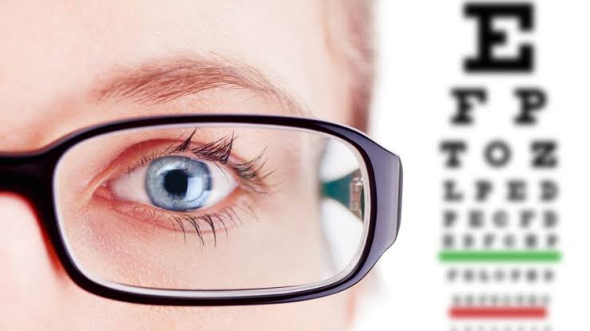

Revisión de agudeza visual

Este examen evalúa qué tan claramente puede ver una persona a diferentes distancias. Generalmente, se utiliza una tabla con letras o símbolos de distintos tamaños para conocer la capacidad visual de cada ojo.
Ayuda a identificar dificultades visuales y a determinar si es necesario realizar otras pruebas o utilizar lentes correctivos.